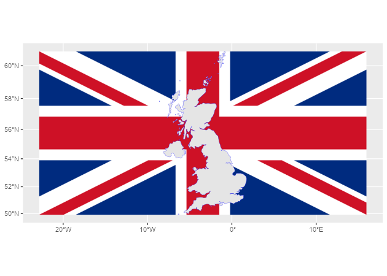
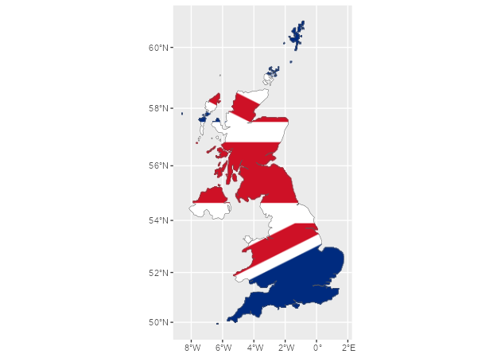

rasterpic is a tiny package with a single goal: geotag an image and return a terra SpatRaster object using coordinates from supported spatial input classes (see ?terra::SpatRaster).
This package is stable and maintained on a best-effort basis. I currently prioritize CRAN compatibility, bug fixes and regressions over new features.
Installation
Install rasterpic from CRAN:
install.packages("rasterpic")Example
rasterpic_img() can geotag an image from several spatial input classes:
-
sf classes:
sf,sfc,sfgandbbox. -
terra classes:
SpatRaster,SpatVectorandSpatExtent. -
stars class:
stars. - A numeric coordinate vector of the form
c(xmin, ymin, xmax, ymax).
rasterpic_img() is an S3 generic. Methods for extent-like inputs use the object extent, and vector methods can also mask the image to the object shape.
This example uses an sf object:
library(rasterpic)
library(sf)
library(terra)
# Use the flag of the United Kingdom.
img <- system.file("img/UK_flag.png", package = "rasterpic")
uk <- read_sf(system.file("gpkg/UK.gpkg", package = "rasterpic"))
class(uk)
#> [1] "sf" "tbl_df" "tbl" "data.frame"
# Geotag the image.
uk_flag <- rasterpic_img(uk, img)
uk_flag
#> class : SpatRaster
#> size : 400, 800, 3 (nrow, ncol, nlyr)
#> resolution : 5398.319, 5398.319 (x, y)
#> extent : -2542183, 1776472, 6430573, 8589900 (xmin, xmax, ymin, ymax)
#> coord. ref. : WGS 84 / Pseudo-Mercator (EPSG:3857)
#> source(s) : memory
#> colors rgb : 1, 2, 3
#> names : r, g, b
#> min values : 0, 14, 35
#> max values : 255, 255, 255
# Plot with ggplot2 and tidyterra.
library(tidyterra)
library(ggplot2)
autoplot(uk_flag) +
geom_sf(data = uk, color = alpha("blue", 0.5))
You can also adjust the expansion, alignment, cropping and masking options:
# Align, crop and mask the image.
uk_flag2 <- rasterpic_img(uk, img, halign = 0.2, crop = TRUE, mask = TRUE)
autoplot(uk_flag2) +
geom_sf(data = uk, fill = NA)
Supported image formats
rasterpic can read the following image formats:
-
pngfiles. -
jpeg/jpgfiles. -
tiff/tiffiles.
Citation
Hernangómez D (2026). rasterpic: Convert Digital Images to Spatially Referenced SpatRaster Objects. doi:10.32614/CRAN.package.rasterpic. https://dieghernan.github.io/rasterpic/.
A BibTeX entry for LaTeX users is:
@Manual{R-rasterpic,
title = {{rasterpic}: Convert Digital Images to Spatially Referenced {SpatRaster} Objects},
doi = {10.32614/CRAN.package.rasterpic},
author = {Diego Hernangómez},
year = {2026},
version = {0.5.1},
url = {https://dieghernan.github.io/rasterpic/},
abstract = {Convert digital images to spatially referenced SpatRaster objects, as defined by the terra package, using coordinates from supported spatial input classes. Supported inputs include numeric coordinate vectors and objects from the sf, terra and stars packages. The main function is an S3 generic, allowing other packages to extend support to additional spatial classes.},
}